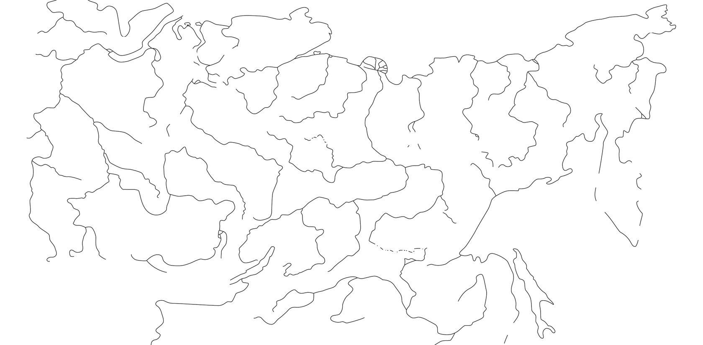

Горловое пение — Хоомей
Экспедиция · Тыва · В. С. Никифорова · 1987
2:143:55
Фонограммы, музыкальные инструменты, экспедиционные материалы и научные публикации в едином цифровом пространстве.
Наведите на название в легенде или на точку на карте.

Экспедиционные записи, исполнители, жанры и музыкальные традиции.
Каталог инструментов, 3D-модели, изображения и связанные фонограммы.
Публикации, исследователи, экспедиции и материалы лаборатории.
Экспедиция · Тыва · В. С. Никифорова · 1987